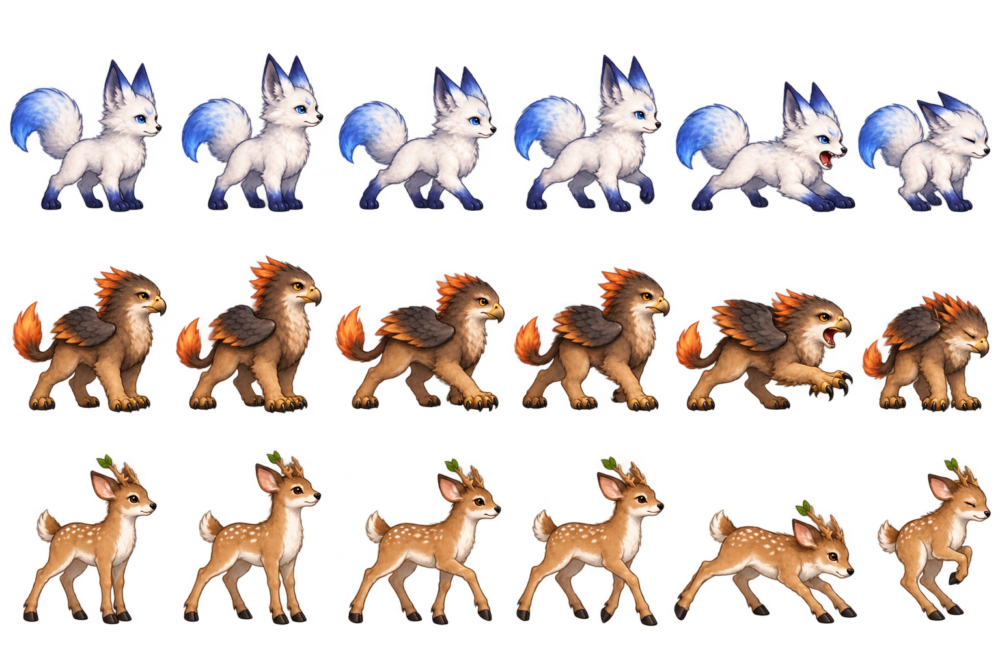

月霜灵狐
霜白大色面 · 蓝耳与一条蓬松尾
约40px显示 · 原图透明度保留
去掉链坠、宝石、盔甲、密集花叶与碎光，用清楚轮廓和柔和大色面表达幼年身份。
下面每只同时展示放大原图与约40像素实际小尺寸；进化后的概念保留原稿。
霜白大色面 · 蓝耳与一条蓬松尾
约40px显示 · 原图透明度保留
朴素棕身 · 鹰头小翼与暖橙尾簇
约40px显示 · 原图透明度保留
浅棕幼鹿 · 短嫩角与两片叶
约40px显示 · 原图透明度保留
从上到下为灵狐、狮鹫、灵鹿。每行：待机A、待机B、行走A、行走B、攻击、受击。实际使用逐帧源矩形，不能自动等分裁剪。

使用内置image_gen编辑pets-v2得到v3，原PNG像素未由脚本修改。完整提示词与默认输出路径 · 透明度/源图哈希/18帧边界检查 · 此前三形态概念